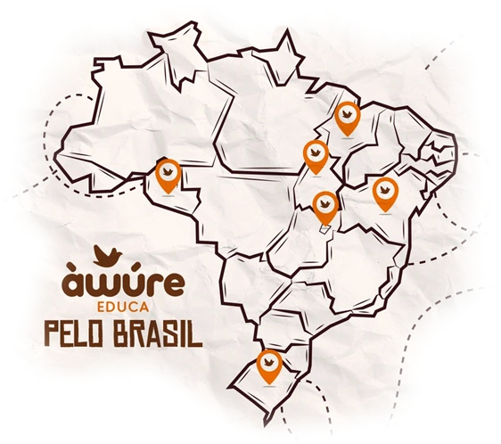
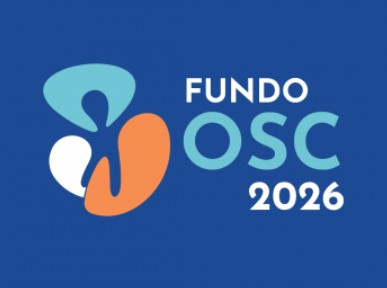
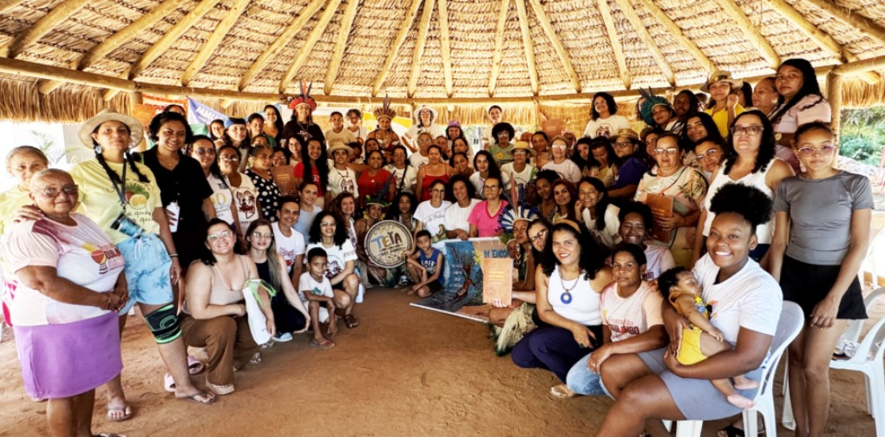
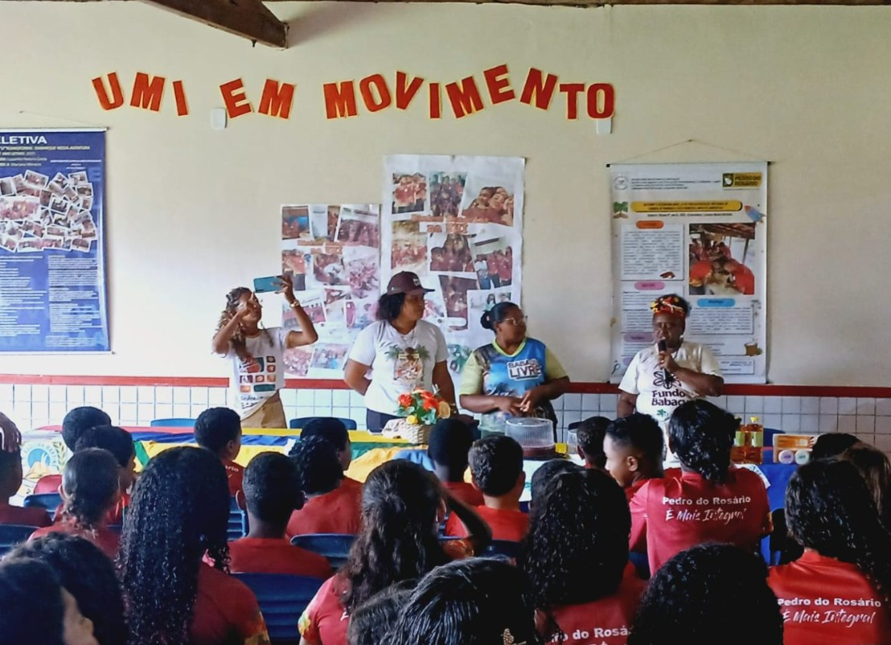

Elaboração de Projetos Sociais
Formação para PCTs, promovendo autonomia na elaboração e gestão de projetos sociais, com protagonismo, valorização dos saberes locais e fortalecimento dos territórios.
Ver mais
Conheça nossos projetos e programas e seus impactos nas comunidades
Formação para PCTs, promovendo autonomia na elaboração e gestão de projetos sociais, com protagonismo, valorização dos saberes locais e fortalecimento dos territórios.
Ver maisFormação para institucionalização das Casas de Axé com foco na autonomia, gestão e sustentabilidade, valorizando saberes ancestrais e fortalecimento dos territórios tradicionais.
Ver maisCursos gratuitos em direitos humanos que fortalecem a autonomia, o acesso ao conhecimento e o protagonismo de comunidades tradicionais e grupos vulnerabilizados.
Ver mais
Não são apenas sob a perspectiva dos números e indicadores, mas, sobretudo, a partir das vidas, histórias e comunidades que foram impactadas. Cada dado representa pessoas reais, processos formativos construídos com respeito às especificidades culturais e iniciativas que avançam na institucionalização e na gestão autônoma de projetos nos próprios territórios.
Fique por dentro do que está acontecendo no mundo e nas nossas redes sociais

O edital é destinado a organizações signatárias da Plataforma MROSC e busca fortalecer iniciativas de impacto social.
Ler matéria
Entre os dias 20 e 22 de março, a Aldeia Kiriri, em Barreiras (BA), foi território de encontro, resistência e celebração.
Ler matéria
Atividade reuniu cerca de 250 estudantes em Pedro do Rosário e destacou o papel das mulheres na defesa do território e dos direitos.
Ler matériaEstamos abertos a parcerias que fortaleçam nosso impacto. Conecte-se ao Instituto Educa e construa iniciativas que gerem transformação real nos territórios onde atuamos.
gestao@institutoeduca.org